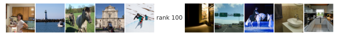

Install all required dependencies
# TODO uncomment before final packaging
# %pip install git+https://github.com/BonnerLab/ccn-tutorial.gitHere’s a link to this notebook on Google Colab.
# TODO uncomment before final packaging
# %pip install git+https://github.com/BonnerLab/ccn-tutorial.gitfrom pathlib import Path
import requests
import typing
import warnings
from loguru import logger
import numpy as np
import pandas as pd
import xarray as xr
import nibabel as nib
import nilearn.plotting
from PIL import Image
from sklearn.preprocessing import MinMaxScaler
from sklearn.decomposition import PCA, NMF
from umap import UMAP
import matplotlib as mpl
from mpl_toolkits.axes_grid1 import ImageGrid
from matplotlib import pyplot as plt
from matplotlib_inline.backend_inline import set_matplotlib_formats
from matplotlib.offsetbox import OffsetImage, AnnotationBbox
import seaborn as sns
from IPython.display import display
from utilities.brain import (
load_dataset,
average_data_across_repetitions,
load_stimuli,
plot_brain_map,
)%matplotlib inline
sns.set_theme(
context="notebook",
style="white",
palette="deep",
rc={"legend.edgecolor": "None"},
)
set_matplotlib_formats("svg")
pd.set_option("display.max_rows", 5)
pd.set_option("display.max_columns", 10)
pd.set_option("display.precision", 3)
pd.set_option("display.show_dimensions", False)
xr.set_options(display_max_rows=3, display_expand_data=False)
warnings.filterwarnings("ignore")random_state = 0
rng = np.random.default_rng(seed=random_state)
NSD is the largest fMRI dataset on human vision, with 7T fMRI responses (1.8mm isotropic voxels) obtained from 8 adult participants. The experiment involved a continuous recognition task while participants observed natural scene images from the Microsoft Common Objects in Context (COCO) database (Lin et al., 2014).
Let’s load the dataset. This data contains neural responses to 872 images from ~15,000 voxels reliably modulated by the visual stimuli during the NSD experiment.
data = average_data_across_repetitions(load_dataset(subject=0, roi="general"))
display(data)<xarray.DataArray 'fMRI betas' (presentation: 700, neuroid: 15724)>
0.4915 0.2473 0.08592 0.05828 -0.1315 ... -0.2126 -0.6315 -0.5751 -0.5354
Coordinates: (3/4)
x (neuroid) uint8 12 12 12 12 12 12 12 ... 71 72 72 72 72 72 72
y (neuroid) uint8 21 22 22 22 22 22 23 ... 34 29 29 30 30 30 31
... ...
stimulus_id (presentation) object 'image02950' ... 'image72948'
Dimensions without coordinates: presentation, neuroid
Attributes: (3/8)
resolution: 1pt8mm
preprocessing: fithrf_GLMdenoise_RR
... ...
postprocessing: averaged across first two repetitionsWe utilized the NSD single-trial betas, preprocessed in 1.8 mm volumetric space and denoised using the GLMdenoise technique (version 3;“betas_fithrf_GLMdenoise_RR”). The betas were converted to Z-scores within each scanning session and averaged across repetitions for each stimulus.
Here are some examples of stimuli that we analyzed.
def view_stimuli(stimuli: xr.DataArray, *, n: int = 10) -> None:
fig = plt.figure(figsize=(15, 5))
image_grid = ImageGrid(
fig=fig,
rect=(1, 1, 1),
nrows_ncols=(1, n),
share_all=True,
)
for i_image in range(n):
image_grid[i_image].imshow(stimuli[i_image])
image_grid[i_image].axis("off")
fig.show()
stimuli = load_stimuli()
view_stimuli(stimuli)
Now we can apply PCA to the neural responses and plot the eigenspectrum of the data!
def view_eigenspectrum(pca: PCA, *, log: bool = False) -> None:
eigenvalues = pd.DataFrame(pca.explained_variance_, columns=["eigenvalue"]).assign(
rank=1 + np.arange(pca.n_components_)
)
fig, ax = plt.subplots(figsize=(6, 6))
sns.lineplot(
ax=ax,
data=eigenvalues.loc[eigenvalues["rank"] < pca.n_components_],
x="rank",
y="eigenvalue",
)
sns.despine(ax=ax)
if log:
ax.set_xscale("log")
ax.set_yscale("log")
ax.set_ylim(bottom=1)
fig.show()
pca = PCA()
pca.fit(data)
view_eigenspectrum(pca)On this plot, we can observse that the first few PCs have substantial variance while there appears to be negligible variance after about rank 20. How can we interpret these PCs of different variance levels? There are some simple ways to visualize these PCs.
def view_images_as_scatterplot(
x: np.ndarray, y: np.ndarray, *, stimuli: xr.DataArray
) -> None:
fig, ax = plt.subplots(figsize=(20, 20))
for i_stimulus in range(len(stimuli)):
image_box = OffsetImage(stimuli[i_stimulus].values, zoom=0.5)
image_box.image.axes = ax
ab = AnnotationBbox(
image_box,
xy=(x[i_stimulus], y[i_stimulus]),
xycoords="data",
frameon=False,
pad=0,
)
ax.add_artist(ab)
ax.set_xlim([x.min(), x.max()])
ax.set_ylim([y.min(), y.max()])
ax.axis("off")
fig.show()
def view_images_at_poles(
x: np.ndarray,
*,
stimuli: xr.DataArray,
n_images_per_pole: int = 5,
label: str | None = None,
) -> None:
indices = np.argsort(x, axis=0)
fig = plt.figure(figsize=(15, 5))
image_grid = ImageGrid(
fig=fig,
rect=(1, 1, 1),
nrows_ncols=(1, 2 * n_images_per_pole + 1),
share_all=True,
)
for i_image in range(n_images_per_pole):
image_grid[i_image].imshow(stimuli[indices[i_image]])
image_grid[i_image].axis("off")
image_grid[-i_image - 1].imshow(stimuli[indices[-i_image - 1]])
image_grid[-i_image - 1].axis("off")
for ax in image_grid:
ax.axis("off")
if label is not None:
ax = image_grid[n_images_per_pole]
ax.text(
0.5,
0.5,
label,
horizontalalignment="center",
verticalalignment="center",
transform=ax.transAxes,
)
fig.show()The first method is to plot the stimuli on a scatter plot, designating their X and Y coordinates to be their scores along two PCs of interest. This allows us to observe potential clustering of the stimuli.
data_pca = pca.transform(data)
view_images_as_scatterplot(data_pca[:, 0], data_pca[:, 1], stimuli=stimuli)
Alternativley, we can focus on the stimuli with the highest or lowest scores along a given PC. It provides simple clues of what this PC might be sensitive to, which could be features ranging from low to high complexity level.
for rank in [1, 2, 3, 10, 50, 100]:
view_images_at_poles(data_pca[:, rank - 1], stimuli=stimuli, label=f"rank {rank}")



Given these visualization, we might deem that the higher-rank PCs are non-interpretable and thus follow the common pratice to drop them. However, before doing so, let’s try visualizing the spectrum on a logarithmic scale for both axes:
view_eigenspectrum(pca, log=True)
On a log-log scale, the spectrum shows no obvious discontinuity! This suggests that the neural population code has a scale-free structure and its latent dimensionality is likely higher than 20!
What kind of structure is this? We observe that the spectrum is approximately linear on this log-log scale, suggesting that the eigenvalues obey a power law:
\log{\lambda_\text{rank}} \approx \alpha \log{\left( \text{rank} \right)} + c \implies \lambda_\text{rank} \propto \left( \text{rank} \right)^\alpha
A power law is a relationship of the form f(x) \propto x^{\alpha}, where \alpha is termed the index of the power law, or the power law exponent.
Power laws are ubiquitious in nature, arising in all sorts of systems:
Power laws are scale-free: f(kx) \propto f(x).
scaler = MinMaxScaler()
scaler.fit(data)
nmf = NMF(n_components=2, random_state=random_state)
data_nmf = nmf.fit_transform(scaler.transform(data))
view_images_as_scatterplot(data_nmf[:, 0], data_nmf[:, 1], stimuli=stimuli)umap = UMAP(n_components=2, metric="euclidean", random_state=random_state)
data_umap = umap.fit_transform(data)
view_images_as_scatterplot(data_umap[:, 0], data_umap[:, 1], stimuli=stimuli)
Benefits of linear methods
As you will see, there are cool methods to get stimulus-dependent variance using linear methods: not obvious with NMF, etc.